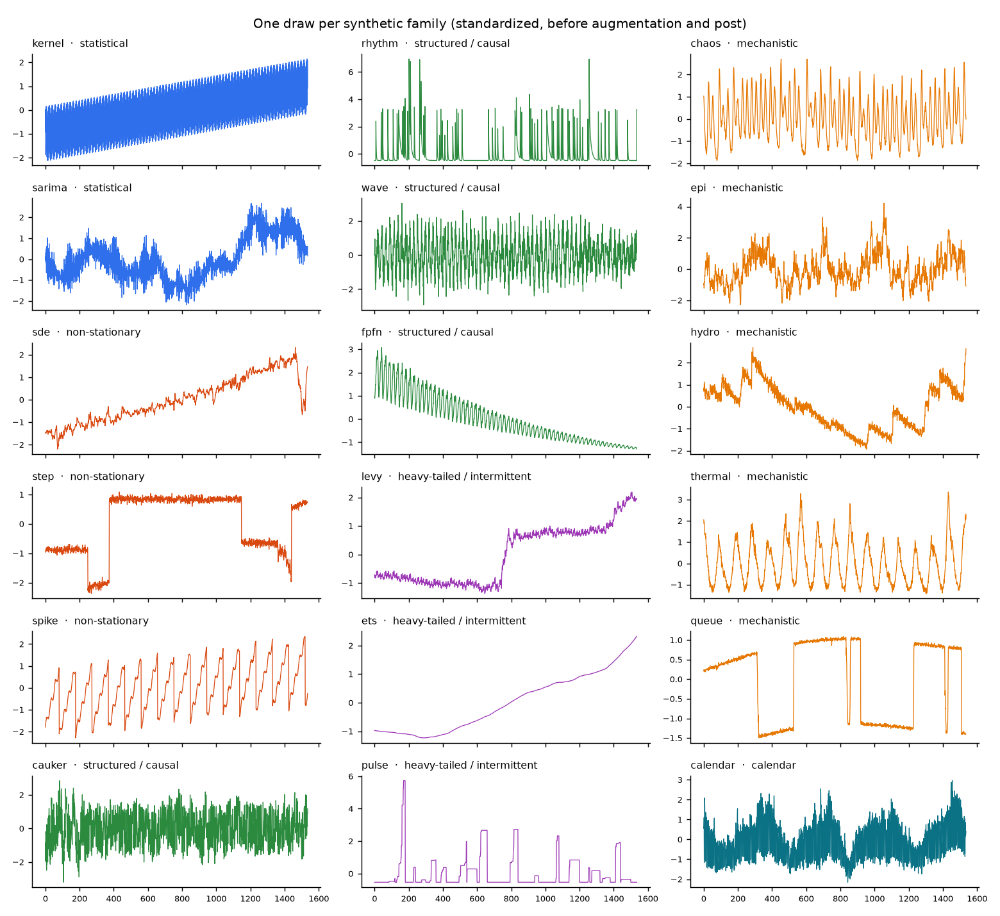

Simons 合成数据流水线
合成数据在训练进程里现生成、现使用：18 个单变量族按权重批量生成并做一轮增强，池里一半的行再耦合成共享 series ID 的多变量组，叠加观测效应后替换 batch 的最后若干行。没有离线数据集，没有拒绝采样，也没有时间戳。原理与参数的完整说明见数据生成指南，四个训练阶段各自怎么用见训练阶段。
先理清四个词
它们在代码和配置里都出现，指的是不同层级的东西。
| 词 | 是什么 | 谁决定 | 数量 |
|---|---|---|---|
| 行（row） | batch 的一行，32 个槽，每槽一条序列 | WIDTH = MAX_VARIATES = 32 |
阶段 1/2：每步 36 / 48 / 84 行；阶段 3/4：打包后行数的 40% |
| 组（group） | 一行里共享同一 series ID 的若干槽，模型眼里的「一个多变量序列」；变量注意力只在组内 | multi._group_sizes |
耦合行平均约 5.5 组（实测）；不耦合行 32 组，每组 1 槽 |
| 族（family） | 单变量的生成方法 | base.family_makers |
18 个，分 6 大类 |
| 机制（mechanism） | 组内序列之间依赖的构造方法 | multi.MECHANISMS |
6 种，每组均匀抽 1 种 |
配置文件的阶段编号和 stage 字段不是一回事：阶段 1、2 的 stage 都是 stage1（纯合成），阶段 3、4 是 stage2（真实数据 + 40% 合成）。本页的「阶段 N」一律指配置文件编号。
两层流程
建池是一次性的：一次 MultiPool.build 生成够用 6 × world（阶段 3/4 是 2 × world）步的全部合成序列。每一步从池里顺序取行、替换进 batch、打包、算 loss，池用完就整池重建，序列不复用。
[N, L] 序列 + series ID + 角色元数据
synth/base.py · synth/multi.py · covariates/roles.py
01–03 是单变量部分，耦合行与不耦合行共用；04–05 只作用于耦合行；06–07 作用于整个池。全部在 GPU 上批量完成（机理族的轨迹库除外，它是缓存的）。
int(n·w/Σw) 条，余数给列表第一个族extra + n + n/4 条fft_length(L + 256)：阶段 1/2 是 8960，阶段 3/4 是 4900heavy / mech / calendar
kernel sarimasde step spikecauker rhythm wave fpfnlevy ets pulsechaos epi hydro thermal 走轨迹库；queue 现算calendarrandperm、NaN 置 0、逐行 z-score，单位一律推迟到 06。机理库每进程缓存 16384（chaos）/ 8192 条长 9216 的轨迹，每被调用 400 次整库重算；取样时随机挑轨迹与通道、步长 1–4、随机起点。draw 里，耦合成员的自身序列与 driver 底料也都被增强过；mix 还会跨族混合。synthetic_multi_fraction = 0.5，与不耦合行随机交错int(LogU(2, 17))，上限 16，最后一组可能只剩 1c · e^{−iωτ} · (1−r)/(1−r·e^{−iω})，在 2·full 网格上做线性卷积√ρ · std(f(Σ 边)) + √(1−ρ) · ownL 步再 z-score。组内成员天然等长、天然对齐：所有底料来自同一次 draw 的同一网格，所以合成侧没有「原始序列长度不一致」的问题，观测长度的差异由 06 事后模拟。observe.py
post(..., group=group)：每个随机量按组号索引，所以同组成员时间方向一致、观测起点一致（实测 94.9% 的多成员组首个观测步完全相同，其余是空洞恰好落在截断边界上）。计数行保持原始整数，跳过取反、偏移和缩放。.plan_pool
meta * (~flip)：翻转后因果方向反了[N, 3] 元数据：是否协变量、末端遮挡 patch 数、未来截断步（15% 的协变量在 [0.75L, L) 之后为 NaN）。阶段 1 没有这一步。阶段 1/2 的 batch 由全 NaN 的空行组成，合成池把它们全部填满；阶段 3/4 先把 784 个真实窗口打包成行，再把最后 40% 的行整行换成合成行。
power_warp
rows − 合成行数，在合成池填入之前power_warp 0.2Windows 取窗时就做完了。合成行不经过任何一项真实数据增强。阶段 1/2 没有这一步。.__call__ / .take
1 − share 预算过。25M / 60M 的阶段 3 前 2005 / 600 步把占比从 1.0 线性降到 0.4：合成行数不变，丢掉部分真实行。50_000_000 起，与合成组的 1_000_000 + 组号 区分。covariates/stream.py
18 个族与各自的权重
权重来自 synthetic_family_weights，各列已归一化到 100%。60M 与 297M 的阶段 1–2 与 178M 相同；25M 去掉了 calendar，其余权重是 178M 的 1/0.65 倍。
| 大类 | 族 | 方法一句话 | 178M / 60M / 297M 阶段 1–2 | 25M 阶段 1–2 | 阶段 3–4 |
|---|---|---|---|---|---|
| 统计 / 谱 | kernel | KernelSynth：周期 / GP / 白噪声 / 线性分量的加乘组合 | 13.7% | 21.1% | 28% |
sarima | 频域稳定 SARMA，积分、季节积分、慢包络 | 13.7% | 21.1% | 28% | |
| 非平稳 | sde | 两状态切换 OU，时变均值与波动 | 7.8% | 12.0% | 12% |
step | 变点、阶梯、平台 | 3.6% | 5.5% | 6% | |
spike | 脉冲串、锯齿、异常尖峰 | 3.6% | 5.5% | 6% | |
| 结构 / 因果 | cauker | 随机 DAG 上的非线性组合 | 5.2% | 8.0% | 8% |
rhythm | 多层节律、丢拍、衰减包络 | 2.6% | 4.0% | 4% | |
wave | AM/FM 的正弦 / 方波 / 三角 / 锯齿 | 2.0% | 3.0% | 4% | |
fpfn | 正趋势 × 季节 × Weibull 噪声 | 2.0% | 3.0% | 4% | |
| 重尾 / 间歇 | ets | 新息 ETS，阻尼趋势、双季节 | 4.4% | 6.8% | — |
levy | t 新息、GARCH、跳跃 | 1.0% | 1.5% | — | |
pulse | 间歇发生 × 重尾量，水库与库存 | 1.0% | 1.5% | — | |
| 机理 | chaos | 29 个混沌 / 受迫 ODE，40% 斜积耦合 | 1.6% | 2.4% | — |
epi | 随机 SEIR / SIR + 报告过程 | 0.9% | 1.4% | — | |
queue | Poisson 到达、Lindley 积压 | 0.9% | 1.4% | — | |
hydro | 降雨-径流、积雪、地下水 | 0.6% | 0.9% | — | |
thermal | 两节点 RC 热模型 + 温控 | 0.6% | 0.9% | — | |
| 日历 | calendar | 每天步数 + 星期 / 年相位 + 节假日 + 日内曲线 | 35% | — | — |

draw(1, 1536, families=(族,))，不做增强也不做 post。颜色对应大类。六种耦合机制
| 机制 | driver | 边 | 延迟 τ | 平滑 decay | ρ | 根 |
|---|---|---|---|---|---|---|
identity | — | 无 | — | — | 0 | — |
mix | 1–2 条族序列 | 连全部 driver，系数 N(0, 1) | 0 | 无 | U(0.3, 0.95) | 无 |
lag | 1–2 条族序列 | 40% 连组内另一成员（链式），30% 再加第二条边 | LogU(4, 256) | 60% 无，否则 LogU(1, 48) | U(0.4, 0.95) | 有（全部 driver） |
coint | 1–2 条随机游走（0.6）/ 漂移游走（0.4） | 连全部 driver，系数 ±U(0.5, 2)；自身是 OU 噪声 | 70% 为 0，否则 LogU(1, 64) | 无 | U(0.6, 0.97) | 无 |
func | 1 条族序列 | 系数 1，再过 tanh / softplus / abs / clip / 量化 / hinge | 40% 为 0，否则 LogU(4, 256) | 70% 无，否则 LogU(1, 32) | U(0.5, 0.95) | 50% |
event | 1 条稀疏冲击（0.6）/ 周期脉冲（0.4） | 1 条边，30% 两条，系数 ±U(0.5, 2) | 80% LogU(1, 128)，否则 0 | LogU(1, 100)，总有 | U(0.3, 0.9) | 有 |
实测各机制占组数 16%–19%（identity 略多，因为单槽组被强制为 identity）；lag 非根成员的 τ 中位数 32 步，四分位 11 / 90，上限 256。identity 组是故意的：模型要见到「同组但无关」的情况。

couple 的输出，post 之前）。为了让依赖肉眼可见，挑的是 ρ 较高的组；灰线是根序列按边的 τ 平移后的样子。训练里 ρ 低到 0.3 的组很多，依赖并不总是显眼。观测效应：哪些在组内共享
| 顺序 | 效应 | 概率与参数 | 组内 |
|---|---|---|---|
| 1 | 时间翻转 | 25% | 共享 |
| 2 | 噪声器 | 30%：Poisson 计数（率 LogU(0.05, 50) × 归一化值）/ 过度离散计数 / 乘性对数正态 / 1% 尖峰 ×U(3, 10)，四选一 | 逐条 |
| 3 | duty 开关 | 阶段 1/2：非计数行的 10%；Markov（平均段长 LogU(4, 512)）或周期开关各半 | 逐条 |
| 4 | 随机单位 | 25% 取反；30% 平移到最小值 0，否则 +U(−3, 3)；×LogU(0.01, 1e4)；计数行跳过 | 逐条 |
| 5 | 左截断 | 40%，观测长度 LogU(96, L) | 共享 |
| 6 | 空洞 | 10% 的行，起始率 LogU(0.001, 0.02)，长 1–32；最后 32 步保留 | 逐条 |

post：同组共用灰色的截断区，但量级各自不同。为了看清，这里把截断概率设为 1、空洞概率设为 0.6；训练用的是 0.4 和 0.1。时间轴、起始时间与频率
| 问题 | 答案 |
|---|---|
合成序列带时间戳或 freq 吗 | 不带。池里只有 [N, L] 的数值、series ID 和角色元数据。 |
| 模型输入有时间特征吗 | 没有。token 只有 asinh 缩放后的值与观测标志；位置编码的周期由 periodicity.detect_periods 在数值上用 FFT 检测。 |
| 频率从哪来 | 隐式的：PERIOD_BANK 的 24 / 168 / 48 / 96 / 288 / 7 / 365 / 52 / 12 等分别对应小时、30 分钟、15 分钟、5 分钟、日、周、月数据的自然周期；60% 的周期从库里取，40% 取 LogU(2, 700)。 |
| 有显式抽采样频率的生成器吗 | 有，但只用于生成形状：calendar（每天 12 / 24 / 48 / 96 / 144 / 288 / 1 步）、season 增强、epi（日 / 周）、hydro（小时 / 日）、thermal（15 分钟 / 小时）、queue（每天 288 / 96 / 24）、效应族 energy 与 classical（freq_label + Cal）。 |
| 起始时间怎么定 | 随机相位：日内偏移、星期相位 0–6、年内相位 U(0, 365.25)、t0 ∈ [0, 1e6) 等，各族各自抽。同组成员的自身序列各抽各的相位，组内没有共同日历。 |
| 真实数据呢 | 随机窗口起点（随机起始时间）、降采样 40% 与拉伸 25%（频率增强）、时间翻转 10%。语料的 freq 只在协变量 pass 里用来挑预测长度（horizon_for）。 |
① 同源：不耦合行的单变量序列、耦合成员的自身序列、driver 底料来自同一次 draw，族、权重、增强完全相同。
② 增强在耦合前，观测在耦合后：前者改变形状，后者改变「被看到的方式」。
③ 翻转与左截断组内共享，噪声、duty、单位、空洞逐条独立。
④ 最后 32 步永远有观测：空洞不会落在最后一个 patch 上。
⑤ 计数行保持整数：不取反、不平移、不缩放，observe 也跳过它们。
⑥ 翻转组没有协变量角色：翻转后领先指标变成了滞后指标。
⑦ 合成行不经过任何真实数据增强：RealAugmenter 与 power_warp 只作用于前 rows − 合成行数 行。
设计上的取舍
| 决定 | 代码里的依据 |
|---|---|
| 在线生成，不落盘 | SyntheticMixer 的 docstring：「Replace the last round(fraction * rows) batch rows from a reusable synthetic-series pool」。池在设备上生成，用完重建，不需要存储，也不会重复。 |
| 耦合放在频域、长度取 7-smooth | fft_length：「for efficient cuFFT grids」；couple：「Reuse bases round-robin to keep pool shapes fixed for FFT-plan reuse」。一次 FFT 同时完成任意延迟、指数平滑和多父求和。 |
| 两遍 combine | 注释「A second pass lets chain followers read their parents' outputs」。链最多两跳，所以两遍正好精确。 |
| 观测效应放在耦合之后、按组共享 | post 的 docstring：「group [n] shares flips/padding」。组内时间方向与观测起点必须一致，组内依赖才不被破坏。 |
| 翻转组不分配角色 | 注释「Time-flipped groups reverse causality, so they receive no covariate roles」。 |
| 阶段 3/4 合成行只填近区 | 配置注释「Synthetic rows: 40% of the packed rows, near region only」，代码没有写原因。从代价看，32768 步上下文的远区有 28672 步，填满整行的生成量约是只填近区的 7 倍。 |
来源：src/simons/synth/（base.py / augment.py / observe.py /
multi.py / nonstat.py / causal.py / heavy.py / mech.py /
calendar.py / covariates/）、src/simons/training/（trainer.py /
schedule.py / objective.py / covariates/roles.py）与 configs/*.yaml。
「实测」数字来自 CPU 上的 plan / MultiPool.build 抽样，命令见数据生成指南第 9 节；
图由 make_figures.py 生成。强调色描边标出该阶段最容易被误解的点。